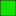

<!doctype html>
<html lang="en">
    <head>
        <meta charset="utf-8">
        <meta http-equiv="X-UA-Compatible" content="IE=edge">
        <meta name="viewport" content="initial-scale=1,user-scalable=no,maximum-scale=1,width=device-width">
        <meta name="mobile-web-app-capable" content="yes">
        <meta name="apple-mobile-web-app-capable" content="yes">
        <link rel="stylesheet" href="css/leaflet.css">
        <link rel="stylesheet" href="css/L.Control.Layers.Tree.css">
        <link rel="stylesheet" href="css/qgis2web.css">
        <link rel="stylesheet" href="css/fontawesome-all.min.css">
        <link rel="stylesheet" href="css/leaflet.photon.css">
        <style>
        html, body, #map {
            width: 100%;
            height: 100%;
            padding: 0;
            margin: 0;
        }
        </style>
        <title>Inspected Cannabis Code Sites in California Valley </title>
    </head>
    <body>
        <div id="map">
        </div>
        <script src="js/qgis2web_expressions.js"></script>
        <script src="js/leaflet.js"></script>
        <script src="js/L.Control.Layers.Tree.min.js"></script>
        <script src="js/leaflet.rotatedMarker.js"></script>
        <script src="js/leaflet.pattern.js"></script>
        <script src="js/leaflet-hash.js"></script>
        <script src="js/Autolinker.min.js"></script>
        <script src="js/rbush.min.js"></script>
        <script src="js/labelgun.min.js"></script>
        <script src="js/labels.js"></script>
        <script src="js/leaflet.photon.js"></script>
        <script src="data/AllInspectedParcels_1.js"></script>
        <script src="data/RemainingCannabisInfrastructure_2.js"></script>
        <script>
        var highlightLayer;
        function highlightFeature(e) {
            highlightLayer = e.target;

            if (e.target.feature.geometry.type === 'LineString' || e.target.feature.geometry.type === 'MultiLineString') {
              highlightLayer.setStyle({
                color: '#ffff00',
              });
            } else {
              highlightLayer.setStyle({
                fillColor: '#ffff00',
                fillOpacity: 1
              });
            }
        }
        var map = L.map('map', {
            zoomControl:false, maxZoom:20, minZoom:13
        }).fitBounds([[35.23421106101418,-120.09313735982137],[35.37009353250988,-119.77394838479586]]);
        var hash = new L.Hash(map);
        map.attributionControl.setPrefix('<a href="https://github.com/tomchadwin/qgis2web" target="_blank">qgis2web</a> &middot; <a href="https://leafletjs.com" title="A JS library for interactive maps">Leaflet</a> &middot; <a href="https://qgis.org">QGIS</a>');
        var autolinker = new Autolinker({truncate: {length: 30, location: 'smart'}});
        // remove popup's row if "visible-with-data"
        function removeEmptyRowsFromPopupContent(content, feature) {
         var tempDiv = document.createElement('div');
         tempDiv.innerHTML = content;
         var rows = tempDiv.querySelectorAll('tr');
         for (var i = 0; i < rows.length; i++) {
             var td = rows[i].querySelector('td.visible-with-data');
             var key = td ? td.id : '';
             if (td && td.classList.contains('visible-with-data') && feature.properties[key] == null) {
                 rows[i].parentNode.removeChild(rows[i]);
             }
         }
         return tempDiv.innerHTML;
        }
        // add class to format popup if it contains media
		function addClassToPopupIfMedia(content, popup) {
			var tempDiv = document.createElement('div');
			tempDiv.innerHTML = content;
			if (tempDiv.querySelector('td img')) {
				popup._contentNode.classList.add('media');
					// Delay to force the redraw
					setTimeout(function() {
						popup.update();
					}, 10);
			} else {
				popup._contentNode.classList.remove('media');
			}
		}
        var title = new L.Control({'position':'topleft'});
        title.onAdd = function (map) {
            this._div = L.DomUtil.create('div', 'info');
            this.update();
            return this._div;
        };
        title.update = function () {
            this._div.innerHTML = '<h2>Inspected Cannabis Code Sites in California Valley </h2>';
        };
        title.addTo(map);
        var abstract = new L.Control({'position':'bottomleft'});
        abstract.onAdd = function (map) {
            this._div = L.DomUtil.create('div',
            'leaflet-control abstract');
            this._div.id = 'abstract'

                abstract.show();
                return this._div;
            };
            abstract.show = function () {
                this._div.classList.remove("abstract");
                this._div.classList.add("abstractUncollapsed");
                this._div.innerHTML = 'A preliminary catalog of parcels in California Valley with prior violations for unpermitted commercial cannabis operations.';
        };
        abstract.addTo(map);
        var zoomControl = L.control.zoom({
            position: 'topleft'
        }).addTo(map);
        var bounds_group = new L.featureGroup([]);
        function setBounds() {
            map.setMaxBounds(map.getBounds());
            map.setMinZoom(map.getZoom());
        }
        map.createPane('pane_StandardMap_0');
        map.getPane('pane_StandardMap_0').style.zIndex = 400;
        var layer_StandardMap_0 = L.tileLayer('http://tile.openstreetmap.org/{z}/{x}/{y}.png', {
            pane: 'pane_StandardMap_0',
            opacity: 1.0,
            attribution: '<a href="https://www.openstreetmap.org/copyright">© OpenStreetMap contributors, CC-BY-SA</a>',
            minZoom: 13,
            maxZoom: 20,
            minNativeZoom: 0,
            maxNativeZoom: 19
        });
        layer_StandardMap_0;
        map.addLayer(layer_StandardMap_0);
        function pop_AllInspectedParcels_1(feature, layer) {
            layer.on({
                mouseout: function(e) {
                    for (var i in e.target._eventParents) {
                        if (typeof e.target._eventParents[i].resetStyle === 'function') {
                            e.target._eventParents[i].resetStyle(e.target);
                        }
                    }
                },
                mouseover: highlightFeature,
            });
            var popupContent = '<table>\
                    <tr>\
                        <th scope="row">APN</th>\
                        <td class="visible-with-data" id="APN">' + (feature.properties['APN'] !== null ? autolinker.link(String(feature.properties['APN']).replace(/'/g, '\'').toLocaleString()) : '') + '</td>\
                    </tr>\
                    <tr>\
                        <th scope="row">Lien Filed</th>\
                        <td class="visible-with-data" id="Lien Filed">' + (feature.properties['Lien Filed'] !== null ? autolinker.link(String(feature.properties['Lien Filed']).replace(/'/g, '\'').toLocaleString()) : '') + '</td>\
                    </tr>\
                    <tr>\
                        <th scope="row">Cannabis Infrastructure Onsite</th>\
                        <td class="visible-with-data" id="Cannabis Infrastructure Onsite">' + (feature.properties['Cannabis Infrastructure Onsite'] !== null ? autolinker.link(String(feature.properties['Cannabis Infrastructure Onsite']).replace(/'/g, '\'').toLocaleString()) : '') + '</td>\
                    </tr>\
                    <tr>\
                        <td class="visible-with-data" id="Lot Condition" colspan="2"><strong>Lot Condition</strong><br />' + (feature.properties['Lot Condition'] !== null ? autolinker.link(String(feature.properties['Lot Condition']).replace(/'/g, '\'').toLocaleString()) : '') + '</td>\
                    </tr>\
                </table>';
            var content = removeEmptyRowsFromPopupContent(popupContent, feature);
			layer.on('popupopen', function(e) {
				addClassToPopupIfMedia(content, e.popup);
			});
			layer.bindPopup(content, { maxHeight: 400 });
        }

        function style_AllInspectedParcels_1_0() {
            return {
                pane: 'pane_AllInspectedParcels_1',
                opacity: 1,
                color: 'rgba(35,35,35,1.0)',
                dashArray: '',
                lineCap: 'butt',
                lineJoin: 'miter',
                weight: 1.0, 
                fill: true,
                fillOpacity: 1,
                fillColor: 'rgba(255,0,0,1.0)',
                interactive: true,
            }
        }
        map.createPane('pane_AllInspectedParcels_1');
        map.getPane('pane_AllInspectedParcels_1').style.zIndex = 401;
        map.getPane('pane_AllInspectedParcels_1').style['mix-blend-mode'] = 'normal';
        var layer_AllInspectedParcels_1 = new L.geoJson(json_AllInspectedParcels_1, {
            attribution: '',
            interactive: true,
            dataVar: 'json_AllInspectedParcels_1',
            layerName: 'layer_AllInspectedParcels_1',
            pane: 'pane_AllInspectedParcels_1',
            onEachFeature: pop_AllInspectedParcels_1,
            style: style_AllInspectedParcels_1_0,
        });
        bounds_group.addLayer(layer_AllInspectedParcels_1);
        map.addLayer(layer_AllInspectedParcels_1);
        function pop_RemainingCannabisInfrastructure_2(feature, layer) {
            layer.on({
                mouseout: function(e) {
                    for (var i in e.target._eventParents) {
                        if (typeof e.target._eventParents[i].resetStyle === 'function') {
                            e.target._eventParents[i].resetStyle(e.target);
                        }
                    }
                },
                mouseover: highlightFeature,
            });
            var popupContent = '<table>\
                    <tr>\
                        <th scope="row">APN</th>\
                        <td class="visible-with-data" id="APN">' + (feature.properties['APN'] !== null ? autolinker.link(String(feature.properties['APN']).replace(/'/g, '\'').toLocaleString()) : '') + '</td>\
                    </tr>\
                    <tr>\
                        <th scope="row">Lien Filed</th>\
                        <td class="visible-with-data" id="Lien Filed">' + (feature.properties['Lien Filed'] !== null ? autolinker.link(String(feature.properties['Lien Filed']).replace(/'/g, '\'').toLocaleString()) : '') + '</td>\
                    </tr>\
                    <tr>\
                        <th scope="row">Cannabis Infrastructure Onsite</th>\
                        <td class="visible-with-data" id="Cannabis Infrastructure Onsite">' + (feature.properties['Cannabis Infrastructure Onsite'] !== null ? autolinker.link(String(feature.properties['Cannabis Infrastructure Onsite']).replace(/'/g, '\'').toLocaleString()) : '') + '</td>\
                    </tr>\
                    <tr>\
                        <td class="visible-with-data" id="Lot Condition" colspan="2"><strong>Lot Condition</strong><br />' + (feature.properties['Lot Condition'] !== null ? autolinker.link(String(feature.properties['Lot Condition']).replace(/'/g, '\'').toLocaleString()) : '') + '</td>\
                    </tr>\
                </table>';
            var content = removeEmptyRowsFromPopupContent(popupContent, feature);
			layer.on('popupopen', function(e) {
				addClassToPopupIfMedia(content, e.popup);
			});
			layer.bindPopup(content, { maxHeight: 400 });
        }

        function style_RemainingCannabisInfrastructure_2_0() {
            return {
                pane: 'pane_RemainingCannabisInfrastructure_2',
                opacity: 1,
                color: 'rgba(35,35,35,1.0)',
                dashArray: '',
                lineCap: 'butt',
                lineJoin: 'miter',
                weight: 1.0, 
                fill: true,
                fillOpacity: 1,
                fillColor: 'rgba(21,225,0,1.0)',
                interactive: true,
            }
        }
        map.createPane('pane_RemainingCannabisInfrastructure_2');
        map.getPane('pane_RemainingCannabisInfrastructure_2').style.zIndex = 402;
        map.getPane('pane_RemainingCannabisInfrastructure_2').style['mix-blend-mode'] = 'normal';
        var layer_RemainingCannabisInfrastructure_2 = new L.geoJson(json_RemainingCannabisInfrastructure_2, {
            attribution: '',
            interactive: true,
            dataVar: 'json_RemainingCannabisInfrastructure_2',
            layerName: 'layer_RemainingCannabisInfrastructure_2',
            pane: 'pane_RemainingCannabisInfrastructure_2',
            onEachFeature: pop_RemainingCannabisInfrastructure_2,
            style: style_RemainingCannabisInfrastructure_2_0,
        });
        bounds_group.addLayer(layer_RemainingCannabisInfrastructure_2);
        var overlaysTree = [
            {label: ' Remaining Cannabis Infrastructure', layer: layer_RemainingCannabisInfrastructure_2},
            {label: ' All Inspected Parcels', layer: layer_AllInspectedParcels_1},
            {label: "Standard Map", layer: layer_StandardMap_0, radioGroup: 'bm' },]
        var lay = L.control.layers.tree(null, overlaysTree,{
            //namedToggle: true,
            //selectorBack: false,
            //closedSymbol: '&#8862; &#x1f5c0;',
            //openedSymbol: '&#8863; &#x1f5c1;',
            //collapseAll: 'Collapse all',
            //expandAll: 'Expand all',
            collapsed: true,
        });
        lay.addTo(map);
        setBounds();
        </script>
    </body>
</html>
